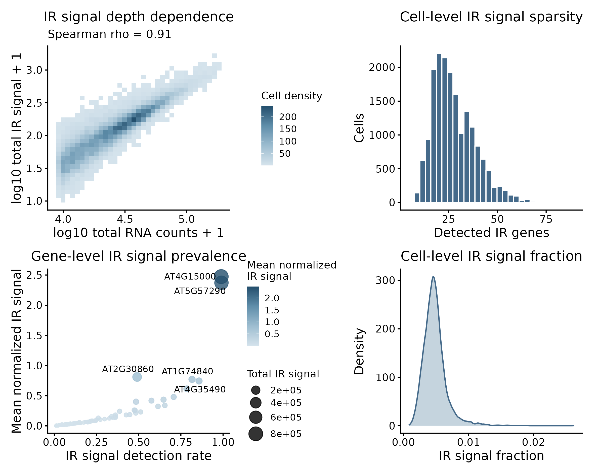
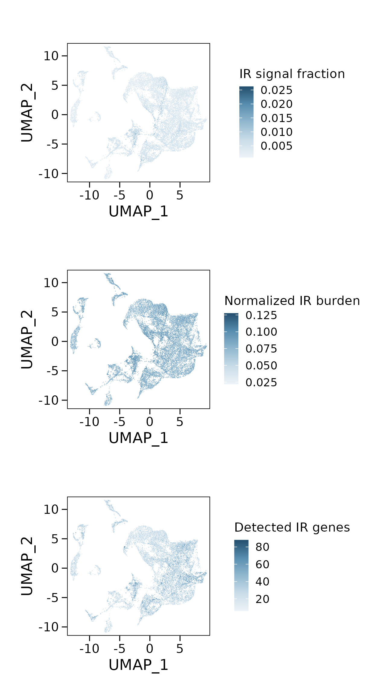
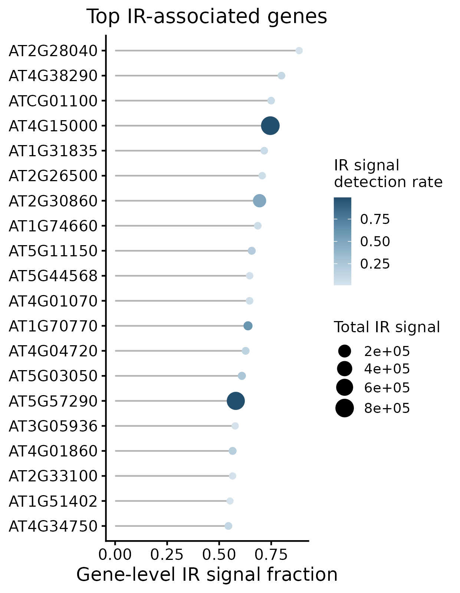
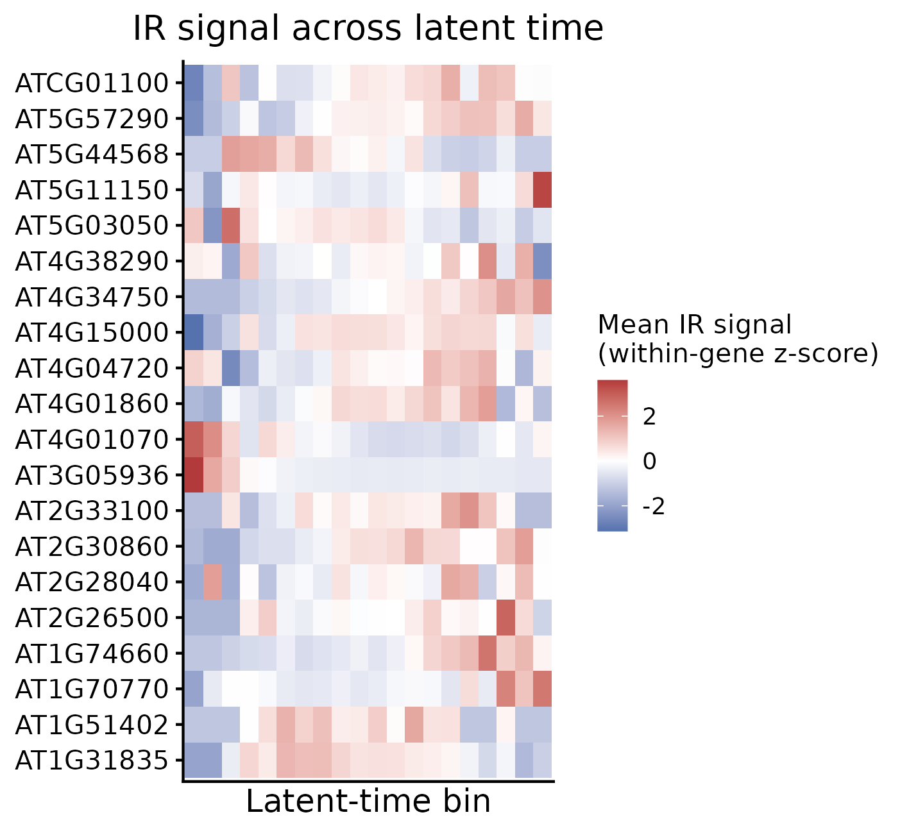
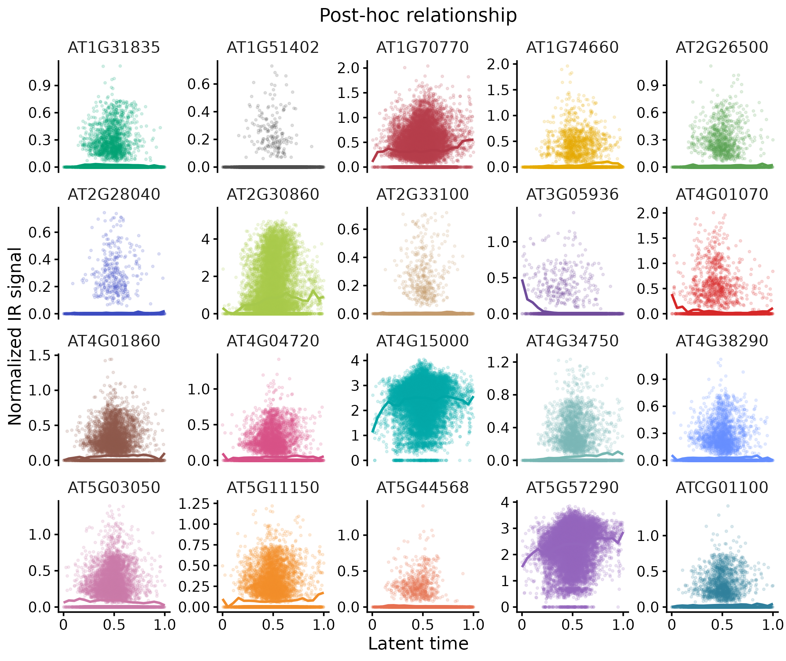
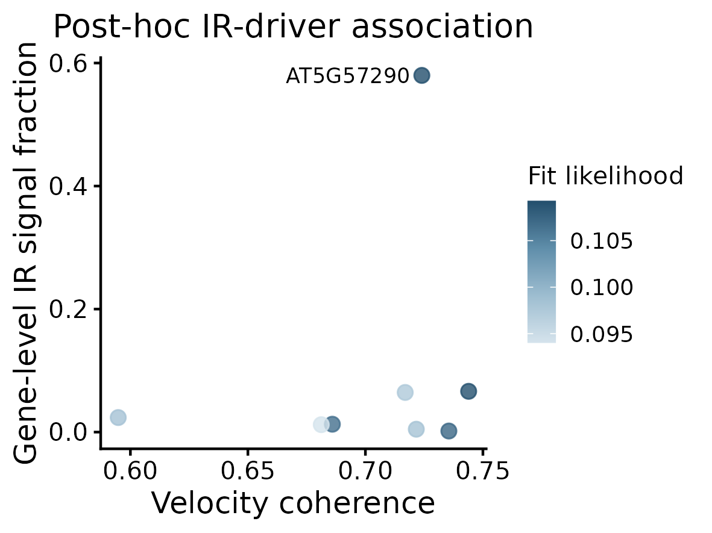

Intron Retention Analysis
Explore IR-associated signals at the cell and gene levels, then compare them with the independently inferred RNA velocity dynamics.
Before you begin¶
Use a pv object containing aligned ir, spliced and unspliced count layers. The optional layers/retained field in the loom file is imported as pv@layers$ir; see Data Preparation.
Basic IR statistics do not require kinetic fitting. Embedding plots require an existing UMAP reduction. The heatmap and trend plots require latent time, and the driver-association plot requires results from Driver Gene Ranking.
IR-associated counts are analysed separately and do not enter the two-state kinetic model.
Compute IR statistics¶
Compute descriptive metrics from the IR count layer:
ir_stats <- compute_ir_stats(pv)The function returns a standalone plantvelo_ir_stats object. It does not modify pv or its fitted dynamics.
min_cellssets the minimum number of cells with positive IR counts for a gene. By default, it is the larger of 10 cells and 1% of all cells, rounded up.min_total_countsets the minimum total IR count per gene; the default is 20.scale_factorsets the library-size normalization scale; the default is 10,000.
IR fractions use IR counts divided by the sum of IR, spliced and unspliced counts. Normalized IR abundance uses the same cell-level library totals, followed by scaling and log1p transformation.
Inspect the cell- and gene-level summaries:
head(ir_stats$cell_metrics)
head(ir_stats$gene_metrics)ir_stats$normalized_ir contains the sparse normalized IR matrix for genes passing the filters. Cell-level IR depth, fractions and detected-gene counts use all input genes; normalized burden is averaged over retained genes.
Inspect IR signal quality¶
Examine sequencing-depth dependence and signal coverage before interpreting biological patterns:
plot_ir_qc(pv, ir_stats)
- Depth dependence compares total IR signal with total RNA counts per cell.
- Cell-level sparsity shows the number of genes with detected IR signal per cell.
- Gene-level prevalence relates detection rate to mean normalized IR abundance.
- Cell-level fraction shows the distribution of IR signal fractions.
Visualize the cell-level IR landscape¶
Map IR metrics onto the existing UMAP embedding:
plot_ir_cell_landscape(pv, ir_stats, reduction = "umap")
- IR signal fraction is the fraction of total counts assigned to the IR layer.
- Normalized IR burden is the mean normalized IR abundance across retained genes.
- Detected IR genes counts genes with positive IR signal in each cell.
These plots display descriptive IR metrics without velocity arrows.
Rank IR-associated genes¶
Display the top IR-associated genes ranked by gene-level IR signal fraction:
plot_ir_gene_association(pv, ir_stats, plot_type = "ranking")
The horizontal position represents IR fraction, point colour indicates detection rate, and point size indicates total IR counts. By default, n_top = 20. Supply genes to display specific identifiers from ir_stats$genes.
This ranking describes IR-associated signal and is distinct from the velocity-coherence ranking.
Explore IR signals across latent time¶
These plots use the existing pv@meta.data$latent_time values. Complete Latent Time & Terminal States first if latent time has not been computed.
Latent-time heatmap
plot_ir_gene_association(pv, ir_stats, plot_type = "heatmap")
Cells are grouped into latent-time bins, and mean normalized IR signals are standardized within each gene. Colours show relative changes along latent time, rather than absolute abundance differences between genes.
Gene-wise trends
plot_ir_gene_association(pv, ir_stats, plot_type = "trend")
Points show cell-level normalized IR signals, and lines summarize the binned trends. latent_bins controls the number of bins and defaults to 20. n_top defaults to 20; use genes to focus on selected genes.
Compare IR signals with velocity-driver scores¶
After completing Driver Gene Ranking, compare IR fractions with the stored velocity-coherence scores:
plot_ir_gene_association(pv, ir_stats, plot_type = "driver")
Each point represents a gene shared by the IR statistics and driver-ranking results. The horizontal axis shows velocity coherence, the vertical axis shows gene-level IR fraction, and point colour represents fitted likelihood.
This is a descriptive association with an independently fitted velocity model. It does not make IR a component of the inferred velocity field.
Interpret the results¶
Interpret IR-associated signals alongside sequencing depth, detection rates and cell annotations. These gene-level fractions summarize counts assigned to the IR layer; they are not event-level intron-retention percentages.
Latent-time patterns and driver-score associations are post-hoc summaries, not evidence that IR causes a change in cell state. Use the linked RNA Velocity Analysis results and gene phase portraits to examine the corresponding transcriptional dynamics.